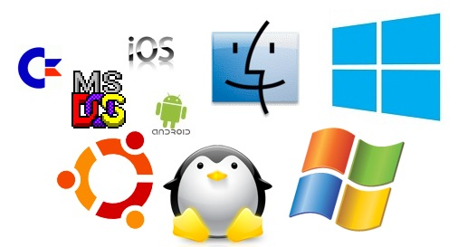

1.1. Definición y concepto
Un Sistema Operativo (SO) es un software que actúa como intermediario entre los usuarios y el hardware de una computadora. Su principal función es gestionar los recursos del hardware y proporcionar un entorno en el que las aplicaciones puedan ejecutarse. Los SO permiten que múltiples programas se ejecuten de manera eficiente y sin interferencias entre ellos, garantizando la asignación adecuada de memoria, procesadores y dispositivos de entrada/salida.
1.2. Funciones y características

Las funciones clave de un sistema operativo incluyen:
- Gestión de procesos: Cada aplicación o programa en ejecución se trata como un proceso. El SO crea, planifica y finaliza procesos según sea necesario, garantizando que el CPU sea utilizado de manera eficiente. La planificación de procesos puede realizarse mediante diversos algoritmos, como la planificación de round-robin, planificación por prioridad, y planificación de colas multinivel.
- Gestión de memoria: El SO debe asignar memoria a los procesos en ejecución, garantizando que no haya conflictos entre ellos. Utiliza técnicas como la memoria virtual y el paginado para mejorar la eficiencia en el uso de la memoria y permitir que programas más grandes se ejecuten en sistemas con cantidades limitadas de RAM.
- Gestión de dispositivos: El sistema operativo controla los dispositivos de entrada y salida (E/S), tales como discos duros, impresoras, teclados y monitores. Esto se hace a través de controladores de dispositivos, que actúan como traductores entre el hardware y el software.
- Gestión de archivos: Proporciona una estructura de almacenamiento organizada (carpetas, directorios, archivos) y servicios para la creación, modificación, eliminación y acceso a archivos. Los sistemas de archivos como NTFS, ext4 y FAT son ejemplos de cómo se organiza el almacenamiento en diferentes SO.
- Seguridad y Protección: Los SO deben proteger los datos y recursos del sistema frente a accesos no autorizados o ataques. Esto incluye la administración de permisos de archivos y usuarios, la autentificación de usuarios y la implementación de políticas de acceso y control.
- Interfaz de usuario: Los sistemas operativos proporcionan una interfaz para que los usuarios interactúen con el sistema, que puede ser gráfica (GUI) o de línea de comandos (CLI). En una GUI, los usuarios interactúan con íconos y ventanas, mientras que en la CLI se usan comandos de texto.
1.3. Evolución Histórica

Los sistemas operativos han evolucionado significativamente desde los primeros días de la informática. Algunos eventos importates que se destacan incluyen:
- Década de 1950: Computadoras sin sistemas operativos, donde el control del hardware era manual.
- Década de 1960: Nacimiento de los primeros sistemas operativos como OS/360 de IBM, que introdujeron la gestión de tareas.
- Década de 1970: Aparición de Unix, un SO flexible y portátil que influyó en el desarrollo posterior de sistemas como Linux.
- Década de 1980: Expansión de SO comerciales como MS-DOS y Mac OS.
- Década de 1990 y más allá: Creación de sistemas multitarea y multiusuario más avanzados, como Windows, Linux y macOS.
Para más información puedes consultar la siguiente linea del tiempo:
Linea del tiempo
1.4. Clasificación
Existen diversas formas de clasificar los sistemas operativos en función de diferentes criterios:
Por número de usuario:
- Monousuario: Solo un usuario puede utilizar el sistema a la vez. Ejemplo: MS-DOS.
- Multiusuario: Varios usuarios pueden interactuar simultáneamente con el sistema. Ejemplo: Linux, Unix.
Por número de tareas:
- Monotarea: Solo se puede ejecutar un proceso a la vez. Ejemplo: MS-DOS.
- Multitarea: Varios procesos pueden ejecutarse simultáneamente. Ejemplo: Windows, macOS.
Por tiempo de respuesta:
- Tiempo real: El SO debe responder inmediatamente a los eventos, como en sistemas embebidos o industriales (RTOS). Ejemplo: QNX, VxWorks.
- No en tiempo real: No requieren una respuesta inmediata y son más comunes en aplicaciones generales. Ejemplo: Windows, Linux.
- Distribuidos: Son aquellos que coordinan un conjunto de computadoras en red, permitiendo el uso conjunto de recursos. Ejemplo: Plan 9, Amoeba.
1.5. Estructura: niveles o estratos de diseño
La mayoría de los sistemas operativos están organizados en niveles o capas de abstracción para modularizar su diseño y simplificar la interacción con el hardware. Las capas básicas incluyen:
- Nivel de hardware: Es la capa física donde se encuentran el procesador, la memoria, los dispositivos de E/S, y otros componentes electrónicos.
- Nivel de núcleo (kernel): El kernel es la parte del SO que interactúa directamente con el hardware, gestionando procesos, memoria, dispositivos, y proporcionando servicios esenciales.
- Nivel de gestión de procesos: En esta capa se organizan las tareas y procesos, controlando cómo acceden a los recursos.
- Nivel de gestión de archivos: En este nivel se gestionan los archivos, directorios y sistemas de almacenamiento del equipo.
- Nivel de usuario: Donde se ejecutan los programas de aplicación y el usuario interactúa directamente con el sistema a través de interfaces.
1.6. Núcleo
El núcleo o kernel es el componente fundamental del SO, responsable de la gestión de los recursos básicos del sistema. Existen varios tipos de kernels:
- Kernel Monolítico: Este tipo de kernel incluye todos los servicios del sistema operativo en un único módulo. Aunque ofrece un rendimiento excelente debido a la comunicación directa entre servicios, puede ser propenso a errores debido a su complejidad.
- Microkernel: Aquí, solo las funciones esenciales, como la planificación de procesos y la comunicación entre procesos, están en el kernel. Esto reduce la complejidad y mejora la estabilidad y seguridad, aunque a veces con un pequeño costo en rendimiento.
- Kernel Híbrido: Combina aspectos de los kernels monolíticos y microkernels, balanceando rendimiento y modularidad. Windows utiliza un kernel híbrido.
El kernel gestiona las interacciones entre hardware y software, asegurando que los programas puedan acceder a los recursos del sistema sin interferir entre sí, y manteniendo la estabilidad y seguridad del sistema.
1.7. Glosario de la unidad 1
- Sistema Operativo (SO): Software que actúa como intermediario entre el hardware de la computadora y los programas, gestionando los recursos y facilitando la interacción del usuario con el sistema.
- Proceso: Una instancia de un programa en ejecución. Los sistemas operativos gestionan los procesos para que puedan ejecutarse de manera concurrente sin interferencias.
- Multitarea: Capacidad del sistema operativo para ejecutar múltiples procesos al mismo tiempo mediante la asignación de recursos (CPU, memoria) a cada uno de ellos.
- Multiprogramación: Técnica que permite la ejecución simultánea de varios programas en un sistema, manteniéndolos en la memoria principal y alternando su ejecución.
- Kernel (Núcleo): Parte central del sistema operativo que gestiona las interacciones con el hardware, controla la ejecución de procesos y maneja los recursos del sistema.
- Gestión de Procesos: Función del sistema operativo que se encarga de la creación, planificación y terminación de procesos, controlando su ejecución y el uso de la CPU.
- Planificación de Procesos (Scheduling): Algoritmo que el sistema operativo utiliza para decidir qué proceso se ejecuta en cada momento, basado en criterios como la prioridad o el tiempo de llegada.
- Memoria Virtual: Técnica que permite a los programas utilizar más memoria de la disponible físicamente, utilizando espacio en el disco duro como extensión de la memoria RAM.
- Paginación: Método de gestión de memoria en el que los datos se dividen en bloques (páginas) y se almacenan tanto en la memoria principal como en la memoria secundaria.
- Segmentación: Técnica de gestión de memoria en la que el espacio de memoria se divide en segmentos de diferentes tamaños, cada uno correspondiente a una parte lógica de un programa.
- Sistema de Archivos: Estructura que organiza y gestiona cómo se almacenan y recuperan los archivos en un dispositivo de almacenamiento, como un disco duro o SSD (ejemplo: NTFS, FAT32, ext4).
- Permisos de Archivos: Controles que definen quién puede acceder o modificar un archivo o directorio en el sistema, protegiendo la seguridad de los datos.
- Interfaz de Usuario (UI): Medio mediante el cual los usuarios interactúan con el sistema operativo. Puede ser una Interfaz Gráfica de Usuario (GUI) o una Interfaz de Línea de Comandos (CLI).
- Controladores de Dispositivos (Drivers): Software que permite la comunicación entre el sistema operativo y los dispositivos de hardware (impresoras, discos duros, tarjetas gráficas).
- Interrupción (Interrupt): Señal que indica al procesador que debe detener temporalmente su tarea actual para atender una operación urgente, como la entrada de datos desde un dispositivo.
- Contexto de un Proceso: Conjunto de datos que describe el estado actual de un proceso, incluyendo sus registros, contador de programa y memoria asignada.
- Interbloqueo (Deadlock): Situación en la que dos o más procesos no pueden continuar su ejecución porque están esperando indefinidamente que otro proceso libere los recursos que necesitan.
- Semaphore (Semáforo): Mecanismo de sincronización utilizado para controlar el acceso concurrente a recursos compartidos en un sistema operativo.
- Sistema Operativo de Tiempo Real (RTOS): Sistema diseñado para aplicaciones que requieren respuestas rápidas y predecibles, como en sistemas de control industrial o dispositivos médicos.
- Sistema Distribuido: Colección de computadoras independientes que trabajan juntas como un solo sistema, compartiendo recursos y tareas.
- Monousuario: Sistema operativo que permite que solo un usuario interactúe con el sistema a la vez, como MS-DOS.
- Multiusuario: Sistema operativo que permite que varios usuarios utilicen los recursos del sistema simultáneamente, como Unix o Linux.
- Monotarea: Sistema operativo que solo puede ejecutar una tarea a la vez.
- Microkernel: Tipo de núcleo que incluye solo las funciones básicas necesarias para el funcionamiento del sistema, delegando muchas otras tareas a procesos fuera del núcleo.
- Núcleo Monolítico: Tipo de núcleo en el que todo el sistema operativo está implementado como una única gran unidad que incluye tanto las funciones básicas como avanzadas.
- Virtualización: Técnica que permite ejecutar múltiples sistemas operativos en una misma máquina física, mediante la creación de máquinas virtuales. Ejemplos incluyen VMware, VirtualBox.
- Interfaz de Línea de Comandos (CLI): Interfaz en la que los usuarios interactúan con el sistema operativo escribiendo comandos en lugar de utilizar gráficos.
- Swap (Intercambio de Memoria): Técnica que mueve temporalmente los datos de la memoria RAM a un espacio de almacenamiento en el disco duro para liberar espacio en la memoria principal.
- Carga de Arranque (Bootloader): Programa que se ejecuta cuando la computadora se enciende y que carga el sistema operativo en la memoria para iniciar el sistema.
- Sistema Empotrado: Sistema operativo diseñado para dispositivos con funciones específicas y recursos limitados, como electrodomésticos, teléfonos móviles y automóviles.
- Seguridad de Sistema Operativo: Conjunto de medidas implementadas en el SO para proteger la integridad y privacidad de los datos, controlar el acceso no autorizado y prevenir ataques de malware.